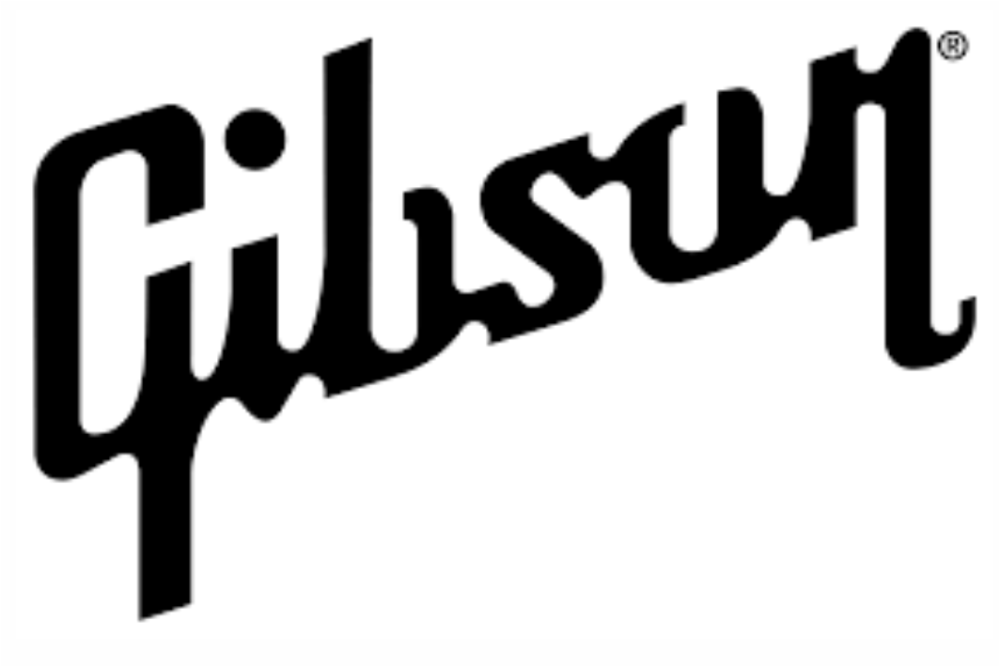
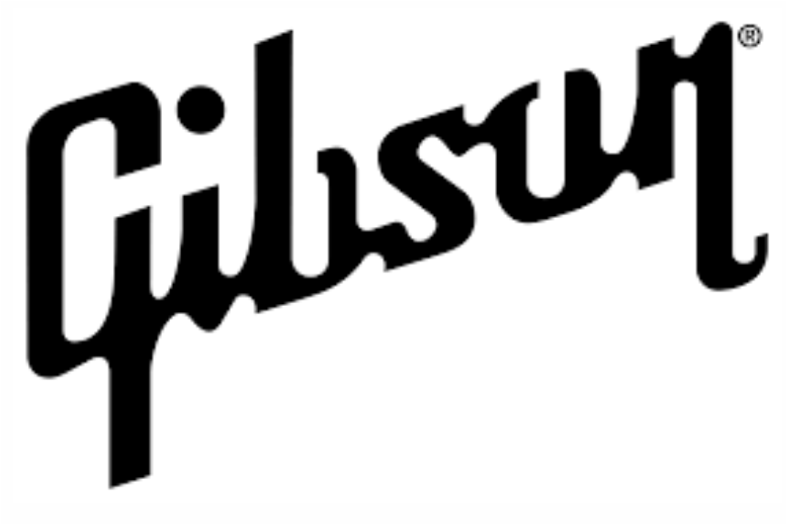

Studio
Music Filter
What We Do
We are a studio dedicated to sound recording. The ideal space is designed to obtain the desired acoustic properties: sound diffusion, low level of reflections, adequate reverberation.


Our Mission
Professional studios offer several advantages and cutting-edge equipment for the best capture and production. Recording, editing and online broadcasting are services offered by professional studios and technology companies.
Services Offered
Recording
Recording instruments with high sound projection, such as drums, brass and guitar, in a home studio is the most difficult task. Conventional drums require sound insulation in this case, unlike electronic drums. An authentic guitar amp sound with distortion will require a power attenuator; Digital amplifier modelers are an alternative.
Mixing
Recording instruments with high sound projection, such as drums, brass and guitar, in a home studio is the most difficult task. Conventional drums require sound insulation in this case, unlike electronic drums. An authentic guitar amp sound with distortion will require a power attenuator; Digital amplifier modelers are an alternative.
Rehearsal
Recording instruments with high sound projection, such as drums, brass and guitar, in a home studio is the most difficult task. Conventional drums require sound insulation in this case, unlike electronic drums. An authentic guitar amp sound with distortion will require a power attenuator; Digital amplifier modelers are an alternative.
Sound Rental
Recording instruments with high sound projection, such as drums, brass and guitar, in a home studio is the most difficult task. Conventional drums require sound insulation in this case, unlike electronic drums. An authentic guitar amp sound with distortion will require a power attenuator; Digital amplifier modelers are an alternative.

Quality in devices and instruments
Recording instruments with high sound projection, such as drums, brass and guitar, in a home studio is the most difficult task. Conventional drums require sound insulation in this case, unlike electronic drums. An authentic guitar amp sound with distortion will require a power attenuator; Digital amplifier modelers are an alternative.
Music Filter is responsible for investing in and launching several successful names in the music market. Today, in addition to being one of the largest record companies in the country, we are also one of the main highlights in the production of national entertainment content with international projections.
Our Partners


 
